Rosendo Martinez
Junior Games & Graphics Programmer
Super Mario Bros Clone
Date Aug 2024 - Oct 2024 | 3 Months
Tech-Stack C++, SFML, ECS, Git
Description A 2D platform game built with C++, SFML (window & input library), and a ECS architecture. Made without game engine.
Key Contributions
- Player movement system that includes gravity, acceleration, skidding, airborne movement logic, and grounded movement logic.
- Collision system that handles (AABB-AABB) collision detection and resolution.
- Sprite animation system for simple 2D animations.
- Software architecture that keeps systems separate to reduce programming complexity.
Flappy Bird 3D
Date Jan 2025 | 1 Month
Tech-Stack C++, OpenGL, Git
Description A 3D game built with C++ and OpenGL. Made without game engine.
Key Contributions
- Particle system used for atmospheric-effect-like trail behind bird.
- Physics and collision for bird, and pipes.
- Background parallax effect.
Pathfinder Algorithm Visualizer
Date Feb 2025 | 1 Month
Tech-Stack C++, OpenGL, OOP, Git
Description A pathfinder algorithm visualizer built with C++ and OpenGL, and with an object-oriented (OOP) architecture.
Key Contributions
- Implemented BFS, DFS, A*, and greedy search.
- Implemented OOP architecture using a shared abstract base class for all search algorithms, enabling consistent, reusable interfaces.
- Step by step visualization of search algorithm.
Render: Ray Caster
Date Feb 2025 | 1 Month
Tech-Stack C++, Git, Bash (build/render scripts)
Description A ray caster built with C++.
Key Contributions
- Sphere texture mapping used to map textures to spheres.
- Derived equations for geometric object representations for cylinder, circle, and plane.
- Height map used for perturbing normals to create illusion of bumpy surfaces.
- Cube skybox implemented with planes.
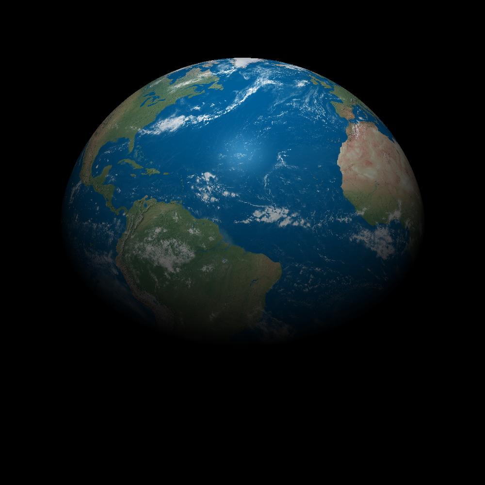
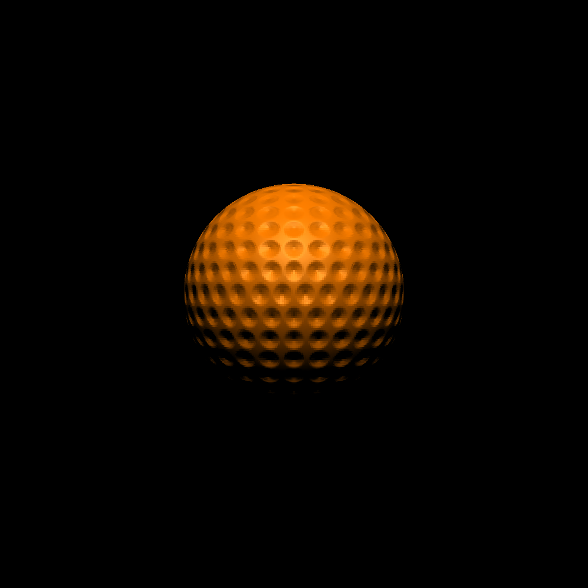
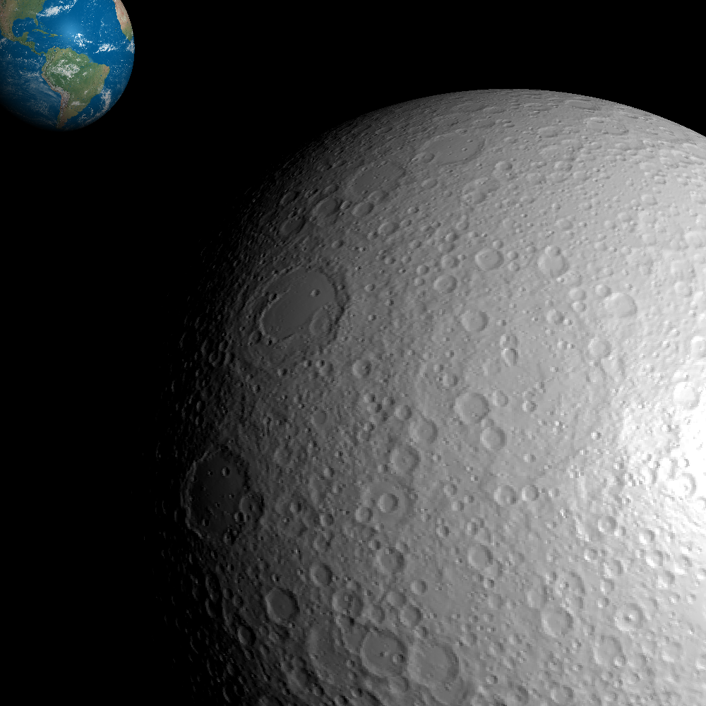
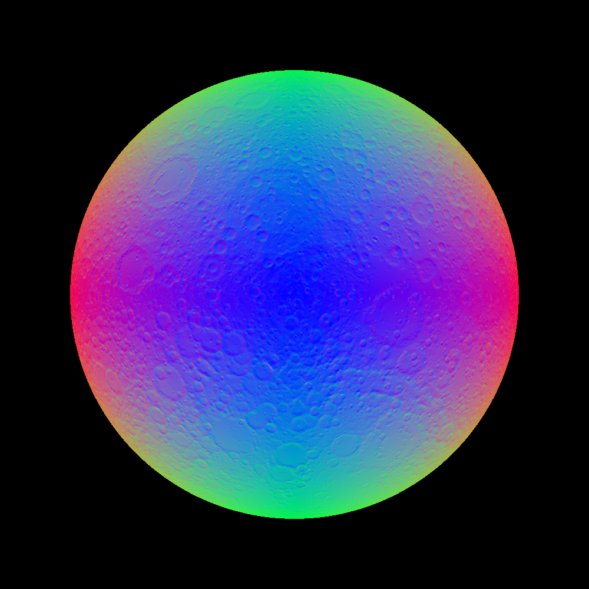
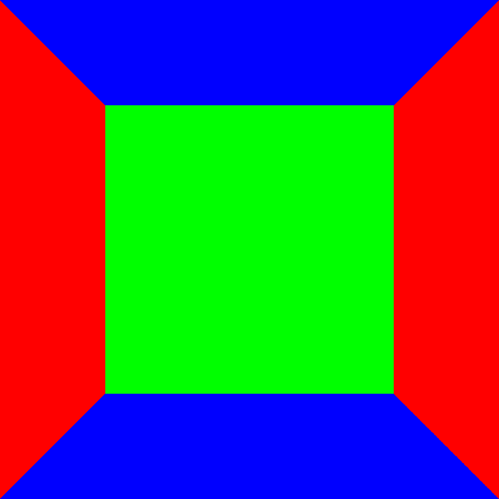
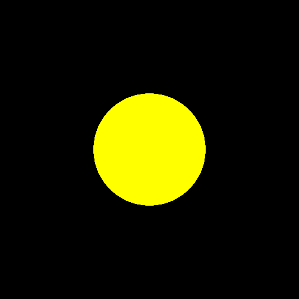
Coherent Noise Visualizer
Date Mar 2025 | 1 Week
Tech-Stack C++, OpenGL, Git
Description A coherent noise visualizer built with C++ and OpenGL.
Key Contributions
- Discovered value noise from first principles and implemented it.
- Linearly interpolated value noise.
- Cubic interpolated value noise.
- Perlin noise.
- Octave noise. Used to create the bump looking surface.
Render: Rasterizer (Coverage-Based Algorithm, Offline)
Date Apr 2025 | 1 Month
Tech-Stack C++, Git
Description A coverage-based (not realtime) software rasterizer that renders to image files. Built with C++. Does not use GPU.
Key Contributions
- Anti-aliasing using supersampling method.
- Coverage-based polygon rasterization.
- Coverage-based triangle rasterization.
- Per-face, per-vertex, and per-fragment shading.
- Point and directional lights.
- Cube skybox. Used method of projecting screen-space points on to world skybox.
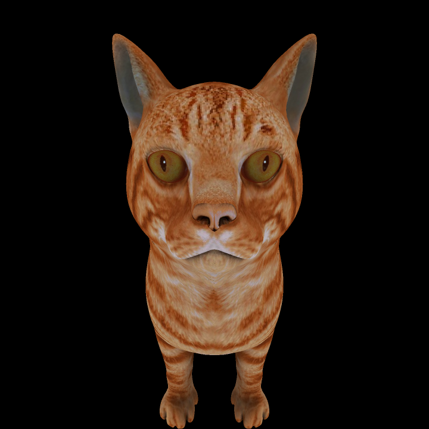
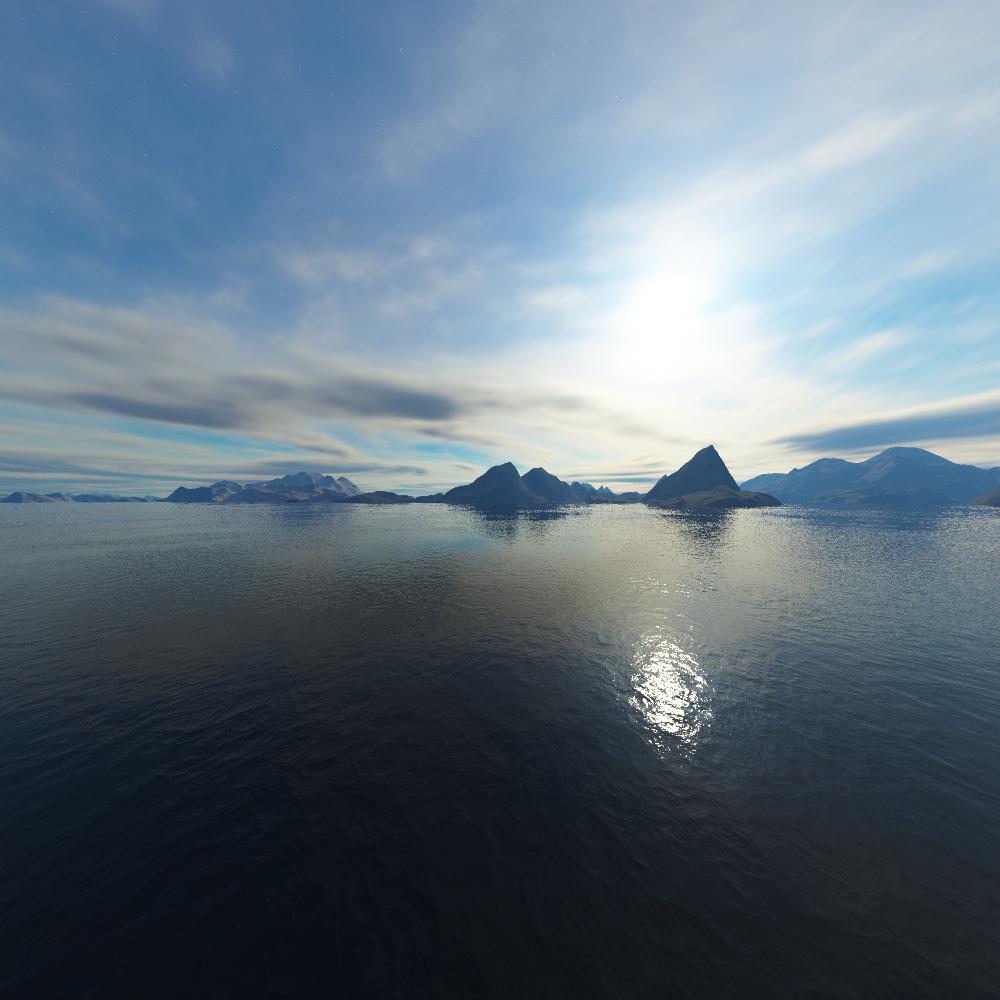
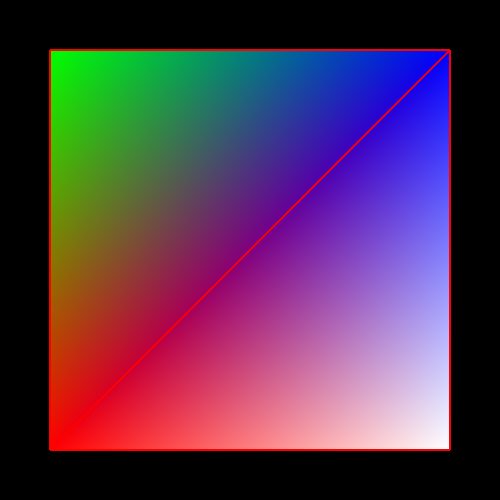
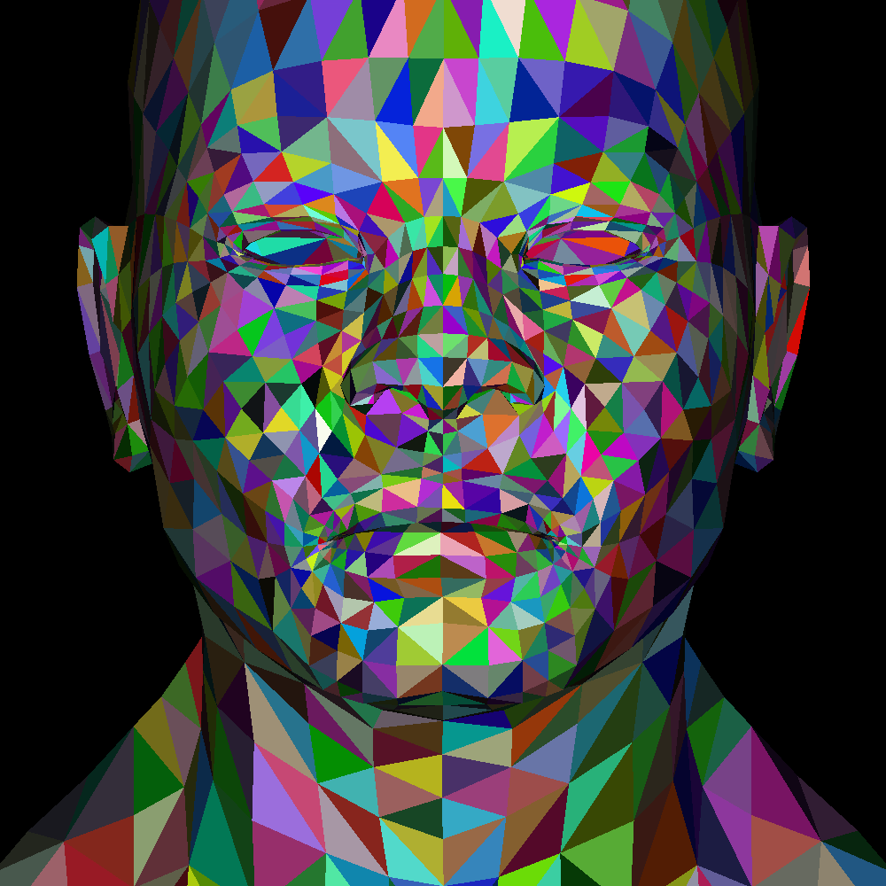
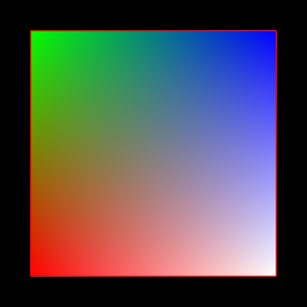
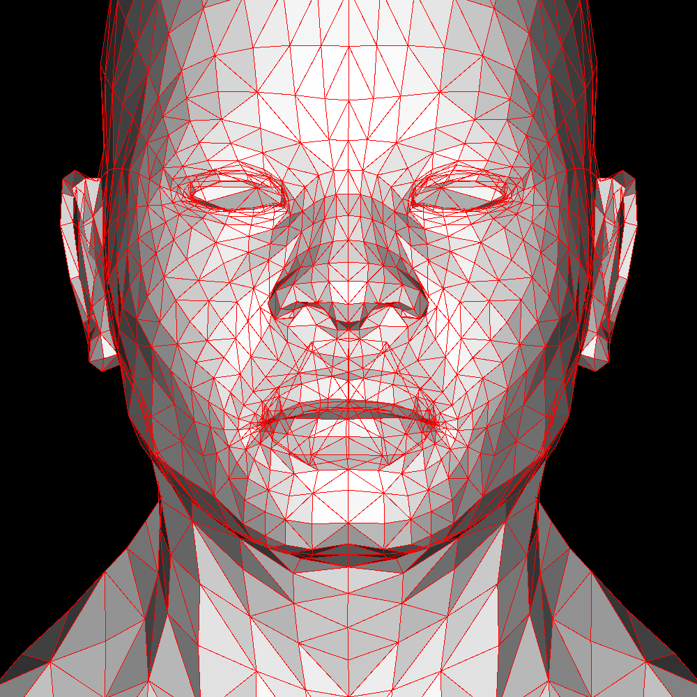
Render: Rasterizer (Scanline-Based Algorithm, Realtime)
Date Jul 2025 - Aug 2025 | 2 Months
Tech-Stack C++, SDL3, Git
Description A scanline-based software rasterizer that renders to a window in real-time. Built with C++ and SDL3 (window & input library). Does not use GPU.
Key Contributions
- Designed & implemented custom graphics pipeline that cuts out the unintuitive 4D math of the standard pipeline.
- Polygon cutter algorithm used for culling geometry outside of camera frustum.
- Arbitrary polygon rasterization using scanline algorithm.
- Line, and point rasterization.
- Buffer blitting used for downsampling (anti-aliasing), upscaling, stretching, and squashing texture/frame buffers.
- Bilinear texture sampling.
Render: Ray Marcher
Date Mar 2026 - May 2026 | 3 Months
Tech-Stack C++, Win32, Visual Studio (Profiler)
Description A software render that uses ray marching to render scene. Built with C++ and Win32 (window & input API). Does not use GPU.
Key Contributions
- Derived math/algorithm for ray marching from first principles.
- Used graphics paper to implement optimized ray-AABB intersection.
- Built custom math library.
- Built comprehensive unit tests for math library and algorithm implementations to test for correctness.
- Used profiler to find, and optimize inefficiencies.
- Built custom platform layer on top of Windows for portability, and ease of implementation.
Education
University of Illinois
Fall 2019 - Fall 2023 | 5 Years
Bachelors of Science in Computer Science
Skills
Languages C++, C#, Javascript, SQL, Python, Java, CSS/HTML
Systems operating systems, databases, networking, computer architecture, graphics
Tools Git, Debuggers, Profilers, Scripting, Compilers, Command-line interface, IDEs
Libraries/APIs OpenGL, Win32, SDL3, SFML, Raylib, React, GLM, .NET
Software Concepts Object-oriented patterns, Data-oriented design, Unit testing, Iterative development, UX/UI
Mathematics Linear algebra, Calculus, Trigonometry, Proofs, Differential calculus, 3D math, Numerical methods, Algorithms, Statistics
Physics Classical mechanics, Optics